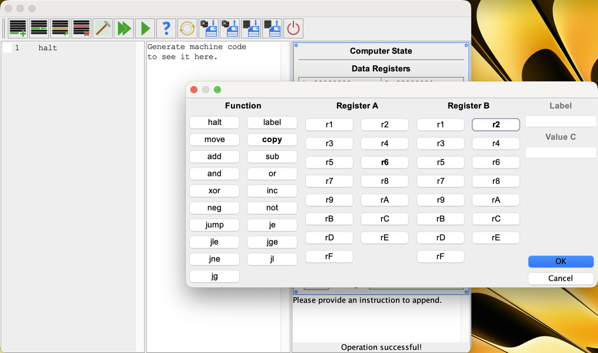

Bitwise
4 May 2026
For the last few months, I've been privately working on a project that I've meant to get around to for a couple of years, and I'm now finally at the point where it's available in a public beta!
Bitwise is a RISC simulator: it lets you write code in a relatively easy-to-use assembly language, compile that code, and step through the execution or get explanations of previous steps. It's designed as an educational tool, aiming to provide a stepping stone between simple graphical demos and more complicated technical systems and help ease you into becoming comfortable with how a computer works on a lower level.

This project was also the first time I've built a whole codebase with test-driven development from the get-go. It was definitely slower this way, but it's also a lot more robust. I don't think I've encountered a bug in Bitwise in more than a month now. Bitwise has also been a great chance for me to work on my CI/CD automation skills, using Maven to its full potential along with jpackage to provide easily-installable apps for download on every commit... although without proper signing many operating systems seem to take issue with them right now.
I hope to continue making Bitwise better, and if you'd like to join me I'd love your help. And, if you'd like to actually see what I've come up with, you can get the latest build on GitHub or check out the repository itself.